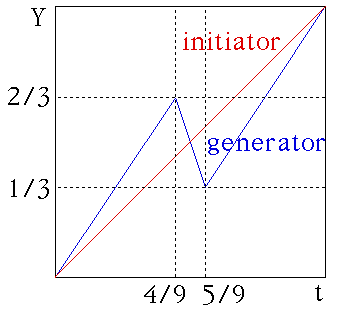

| The initiator is the straight line segment from (0, 0) to
(1, 1). |
| The generator has turning points (4/9, 2/3) and
(5/9, 1/3), |
| so is the broken line segment from (0, 0) to
(4/9, 2/3) to (5/9, 1/3) to (1, 1). |
|  |
| Note for the generator segments, |
| dt1 = 4/9 - 0 = 4/9, | dY1 = 2/3 - 0 = 2/3, | so dY1 = (dt1)1/2 |
| dt2 = 5/9 - 4/9 = 1/9, | dY2 = 1/3 - 2/3 = -1/3, | so -dY2 = (dt2)1/2 |
| dt3 = 1 - 5/9 = 4/9, | dY3 = 1 - 1/3 = 2/3, | so dY3 = (dt3)1/2 |
|
| We see all three segments of the generator satisfy |
| |dYi| = (dti)1/2. |
| This is the self-affinity scaling
property of Brownain motion, and the reason we call this
the generator of a Brownian motion cartoon. |